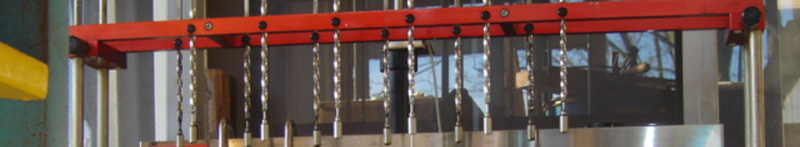

| | Nederlands | English | Deutsch | | ||||||||||||||
|  | ||||||||||||||
|
||||||||||||||
About Smit Ab and Ans Smit Then the era of one-hour-service chemical cleaning arrived. Smit opened affiliates in Amstelveen, Oudekerk, Amsterdam, Aalsmeer and Mijdrecht. However, the management of all these affiliates became time-consuming and Smit was ready for something new. The affiliates were sold and Smit started dyeing and bleaching of textiles and stonewashing of jeans. In 1987, the Dyehouse moved to a building that had become available on the Amsteldijk Noord 31 in Uithoorn. This building is five times the size of the workshop on the Amstelkade. For clients and designers, Smit is constantly looking for the most fashionable and vivid colour effects. He experiments with dyeing of delicate and hard-to-dye tissues. The marvellous results of his efforts can be found in shops all over the country and abroad. |
||||||||||||||